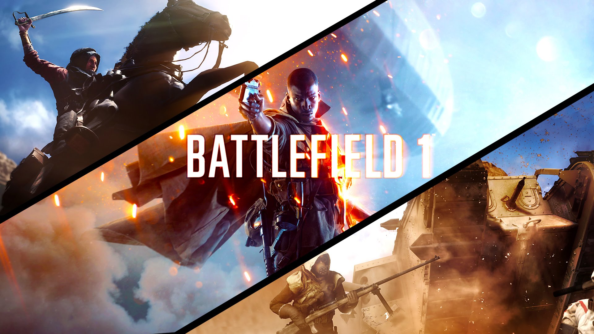

The Last Of Us 2

The Last of Us Part II is an upcoming third-person action-adventure survival horror video game being developed by Naughty Dog and will be published by Sony Interactive Entertainment for the PlayStation 4.
The game acts as a sequel to The Last of Us and picks up the story of Ellie and Joel approximately five years after the events of the last game.
The Last of Us Part II takes place approximately five years after the original, about 25 years after the outbreak of the Cordyceps Brain Infection began, and will feature the return of a 19-year-old Ellie, who players will assume control of, as well as Joel in his mid-fifties. Ellie is fueled by hate, which will be a major theme within the story.
Nintendo Switch
The Nintendo Switch[b] is the seventh major home video game console developed by Nintendo. Originally known in development as the NX, it was officially unveiled in October 2016, and was released worldwide on March 3, 2017.
Nintendo considered the Switch a "hybrid" console. It is designed primarily as a home console, with the main unit inserted onto a docking station to connect to a television. Alternatively, it can be removed from the dock and used similarly to a tablet computer through its LCD touchscreen, or placed in a standalone tabletop mode playable by several people.Battlefield 1
Battlefield 1 is a first-person shooter video game developed by EA DICE and published by Electronic Arts. It is the fifteenth installment in the Battlefield series, and the first main entry in the series since Battlefield 4.[1] The game was released worldwide for Microsoft Windows, PlayStation 4, and Xbox One on October 21, 2016.
Battlefield 1 received mostly positive reviews by critics and was seen as an improvement over previous installments Battlefield 4 and Battlefield Hardline. Most of the praise was directed towards its World War I theme, multiplayer modes, visuals, sound design, and single-player campaign.
[1] [2]